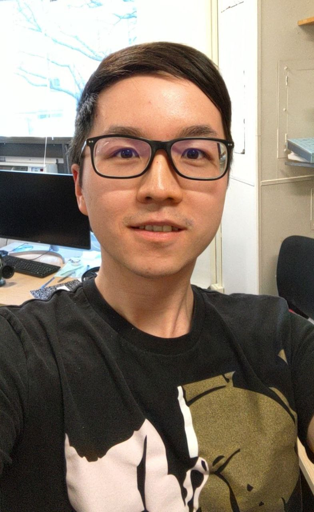

Post doctoral researcher at RIT
Researcher in psychophysical vision science with a background in computer science, focused on color, brightness, and modeling.

I am a vision scientist with over seven years of experience specializing in the psychophysics of color and brightness perception.
Currently, I am a Postdoctoral Researcher in Dr. Benjamin Chin’s Visual Action Lab at Rochester Institute of Technology (RIT). My current research investigates the intersection of ocular accommodation and chromatic aberration.
Research Background & Ph.D. Work
My doctoral research at Northeastern University (with Dr. Rhea Eskew) employed psychophysical methods to investigate suprathreshold perceptual scaling and contrast discrimination. By modeling perceived intensity within cone contrast space, I work to characterize how the human visual system processes signal strength across chromatic directions, with a specific focus on the perceptual asymmetry between increments and decrements. Additionally, I analyze natural image statistics to explore the fundamental relationships between environmental properties and psychophysical visual performance.
"I believe that accurate stimulus control is the foundation of meaningful psychophysics."
I place a heavy emphasis on experimental calibration and display modeling. In my view, the validity of visual research is only as good as the precision of the stimulus delivery.
The Computational Foundation
My approach is uniquely informed by my background in Computer Science. I hold a Bachelor’s degree from Chongqing University, which provided me with a rigorous foundation in algorithms, systems, and graphics. This allows me to:
- Develop custom experimental software frameworks for experimental designs.
- Implement complex psychophysical modeling.
- Utilize diverse tools including Python, C++, MATLAB, and R.
Academic Journey
Prior to my Ph.D., I earned a Master’s degree in Vision Science from Brandeis University in Dr. Robert Sekuler’s lab. It was here that I was first introduced to the field; the experience sparked my deep interest in human vision and established the trajectory for my career in psychophysical research.